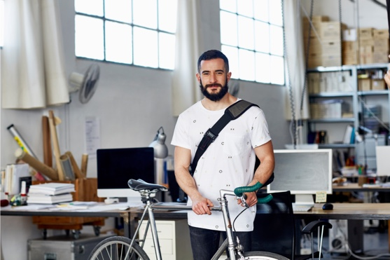

Green
Revolution?
It’s a team
effort.
Free 14 days trial, no credit card required.
Green
Revolution?
It’s a team
effort.
Free 14 days trial, no credit card required.
Challenge your
team to make small,
sustainable choices
at work.
Greenlist is a simple internal tool that empowers companies to start a sustainable office lifestyle while driving change in a way that feels natural. With both a fun and inspiring approach, Greenlist turns cutting down on plastic into a friendly in-company competition that celebrates individuals for their efforts.

Create a cleaner and
better world, on Slack.
Whether it’s choosing reusable food and liquid containers or picking the vegetarian option for the office lunch, Greenlist allows anyone in your team to set a positive role model and influence other staff in being more cautious about plastic pollution and using resources sustainably.